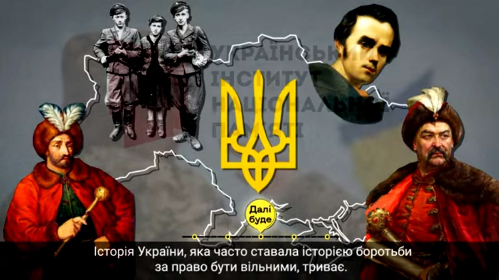

Про Україну
Україна – найбільша країна в Європі. Країна з багатою та різноманітною культурою, батьківщина всесвітньо відомих митців та літераторів. Хочете дізнатись більше про минуле та сьогодення України? У цій статті ви знайдете цікаві факти та посилання на ресурси, які допоможуть вам пізнати сучасну Україну.
